Panchita is established with a Tacos Shop in the desert of North Mexico. To attract clients, she installed lots of signs like the one represented in Figure 1 all over the desert. The signs are intended to point in the direction of the shop; however, Panchita's magnetic needle has a problem and only gives four directions: North, South, East and West. Thus, the signs only point to the shop with a certain approximation. In the desert, besides Panchita's shop and the signs, there is nothing more.
Panchita is happy with her signs: people transversing the desert usually make a deviation from their original route to follow the signs up to the shop, and she makes money. Her life would be perfect if there were no windstorms in the desert. The problem is that the wind makes the signs rotate, as if they were weathercocks. After each storm, Panchita has to visit all the signs to fix their direction.
We may simulate a simplification of Panchita's environment using a grid-based representation as the one in Figure 2. In this simulation, Panchita's shop is represented by a single dark position and signs by two neighbour dark positions.
Directions are defined as angles, taking the East direction as the 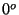 reference (e.g., North is 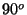, North-West is 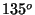).
A sign rotates around one of its dark positions: we call it the sign's pivot position. This one corresponds to the side of the sign with an arrow shape (in Figure 1, the left side). That's why pivot positions are represented in Figure 2 with triangles.
Thus, a pivot position remains fixed in the map when a sign changes direction. The position that moves is called movable (see Figure 3).
This representation obviously lacks lot of detail. Sign direction, for instance, can only be represented in multiples of 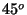. Therefore, we will assume that wind may only leave signs pointing in directions which are multiples of .
Problem
Given a partial map of the desert after a windstorm, simulate the result of changing the signs' directions to North, South, East or West, so that all them point approximately to Tacos Panchita. Figure 4 illustrates a hypothetical scenario.
The intended result is represented in Figure 2: a new map with the signs' directions changed by moving movable positions.
To determine a corrected sign direction, you must first compute the direction from Tacos Panchita to the sign's pivot position. 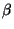, the new direction from the pivot to the respective movable position, will be the closest multiple of , i.e., will be the multiple of such that 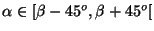 (note the closed left interval).
Figure 5 illustrates this calculation: signs with pivots in area 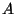 must point to West, those with pivots in area 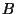 must point to South, and so on.
The following assumptions will be taken:
Input
The input will contain several test cases, each of them as described below. Consecutive test cases are separated by a single blank line.
The input file consists of a variable number of lines as follows: First line: 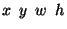
Next 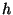 lines: 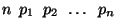
where each 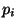 is the  coordinate of a pivot position in the current line. Lines are presented in descending order of their coordinates. In each line, pivot coordinates are presented in ascending order.
coordinate of a pivot position in the current line. Lines are presented in descending order of their coordinates. In each line, pivot coordinates are presented in ascending order.
Movable positions are not included in the input as they are not needed to solve the problem.
Output
For each test case, the output must follow the description below. The outputs of two consecutive cases will be separated by a blank line.
Output should represent the map with the signs in the correct directions, and consist of a variable number of lines as follows:
First line:
where  and are the (always positive) coordinates of Tacos Panchita's position, and 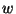 and are the width and the height of the given map
and are the (always positive) coordinates of Tacos Panchita's position, and 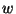 and are the width and the height of the given map
Next lines: 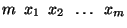
where each 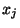 is the  coordinate of a movable position in the current line. Lines are presented in descending order of their coordinates. In each line, movable coordinates are presented in ascending order.
coordinate of a movable position in the current line. Lines are presented in descending order of their coordinates. In each line, movable coordinates are presented in ascending order.
Pivot positions are not included in the output as they are kept unchanged.
Sample Input
3 3 7 6 1 6 1 2 0 1 6 1 2 1 5
Sample Output
3 3 7 6 1 2 0 0 1 7 0 2 2 6